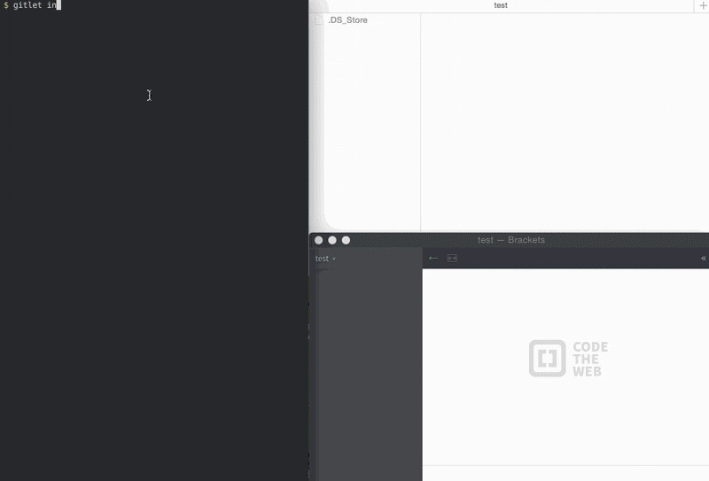

This version-control system mimics some of the basic features of the popular version-control system git:
Saving backups of directories of files.
Restoring a backup version of one or more files or entire commits.
Viewing the history of your backups.
Maintaining branches.
Merging changes made in one branch into another.
Each commit has a unique id of a cryptographic hash function called SHA-1 (Secure Hash 1). Reading and writing internal objects from and to files with Java's serialization facilities.

The Commands:
Initialize: init
Add: add [file name]
Commit: commit [message]
Remove: rm [file name]
Log: log
Find: find [commit message]
Status: status
Checkout: checkout [file name]
Checkout: checkout [commit id] [file name]
Checkout: checkout [branch name]
Branch: branch [branch name]
Remove: rm-branch [branch name]
Reset: reset [commit id]
Merge: merge [branch name]
Rebase: rebase [branch name]
Interactive Rebase: i-rebase [branch name]